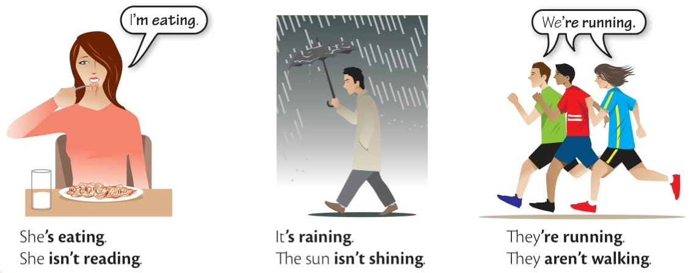

Elementary Grammar
Unit 3 • I am doing (present continuous)
A

The present continuous is:
am/is/are + doing/eating/running/writing etc. = something is happening now:
Please, be quiet. I'm working. (=I'm working now)
Look, there's Sarah. She's wearing a brown coat. (=she is wearing it now)
The weather is nice. It's not raining.
A: Where are the children? B: They're playing in the park.
(on the phone) We're having dinner now. Can I call you later?
You can turn off the TV. I'm not watching it.
B
Subject + verb be + ing
I'm working. I'm not watching TV.
Maria is reading a newspaper.
She isn't eating.
The bus is coming.
We're having dinner.
You're not listening to me.
The children are doing their homework.
C
Spelling
General
do -> doing fazer
eat -> eating comer
play -> playing jogar, brincar
rain -> raining chover
read -> reading ler
walk -> walking caminhar, andar
watch -> watching assistir
wear -> wearing vestir
work -> working trabalhar, funcionar
-e (drop it)
come -> coming vir
dance -> dancing dançar
lie -> lying mentir, deitar-se
make -> making fazer
shine -> shining brilhar
take -> taking pegar, levar
write -> writing escrever
c + v + c = double letter
run -> running correr
sit -> sitting sentar-se
stop -> stopping parar
swim -> swimming nadar
EXERCISES
1.1 ....
...